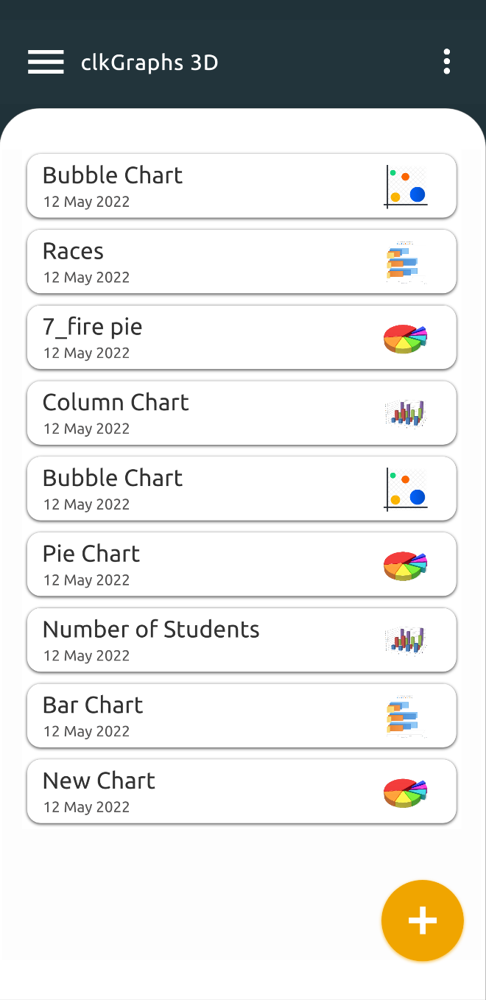
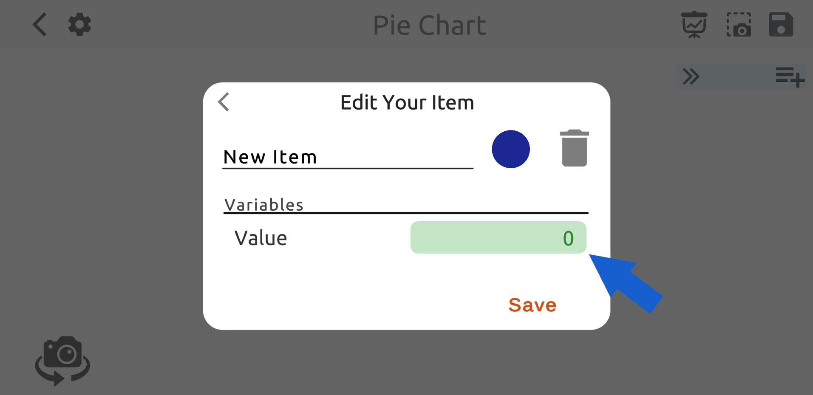
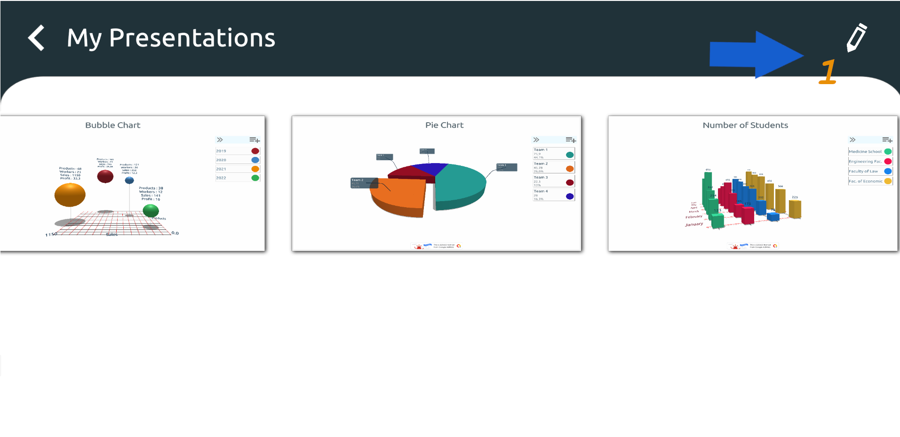
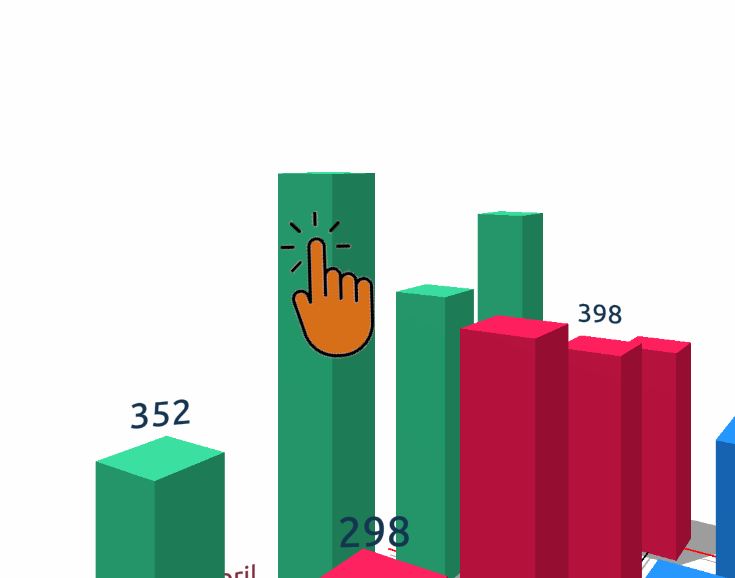

clkGraphs 3D - Guía de creación de gráficos
En esta guía, intentaremos explicar cómo crear gráficos con la aplicación clkGraphs 3D y cómo usar la aplicación de la manera más eficiente.
Contenido del manual
Creación de gráfico
Gráfico circular
Pantalla de configuración
Grupos de presentación
Variables
Creación de gráficos
Haga clic en el botón Agregar con forma de signo más en la página principal y seleccione el tipo de gráfico que desea crear.


Gráfico circular
Imagínese que elige el gráfico circular de la pantalla que se abre y va a crear un gráfico circular con los datos que tiene.
La página se abrirá primero con la ventana Agregar elemento. Después de ingresar el valor y hacer clic en el botón "Guardar", verá la primera versión del gráfico circular como se muestra a continuación.

Dado que se ha agregado un solo elemento a su gráfico en este punto, es normal ver un gráfico circular completo en un color en el área central.
Si hace clic en el elemento "Nuevo elemento" que se muestra con "1" en la imagen a continuación, puede ver el color, el nombre y el valor del elemento actual.
Puede cambiar sus propiedades. Si desea agregar un nuevo elemento a su gráfico, puede usar el botón Agregar elemento indicado por "4".
Puede dar un nuevo nombre a este dibujo haciendo clic en la parte indicada por "3" en la parte superior de la pantalla.
Puede establecer el tamaño de la etiqueta en el gráfico y agregar el gráfico a un grupo de diapositivas usando "Configuración"
botón con indicado por "2".

Ventana de configuración
La siguiente página se abre con el botón "Configuración" ubicado en el punto dos. La barra deslizante indicada por el número "1" en esta página
Establece el tamaño de la etiqueta de nombre junto al gráfico circular. En el punto "2" puede ingresar un nombre de grupo para su trabajo y
puede incluir su gráfico en ese grupo presionando el símbolo (+) al costado. Usando la lista desplegable "3" en lugar de crear un nuevo grupo
puedes elegir uno de los grupos disponibles.
Entonces, ¿qué hacen estos grupos? Te lo contamos ahora.

Grupos de presentaciones
En la imagen de abajo, puedes ver los botones "1", "2", "3" en la parte superior derecha. Después de ingresar todos sus valores, puede guardar su gráfico
con el uso del botón Guardar indicado por "3". El botón número "2" es el botón de captura de pantalla. Cuando ingresas tus valores y tienes tu gráfico listo
puede hacer su presentación desde esta página o agregar esta imagen como una página a un grupo de diapositivas que creó en la página "Configuración".
De esta manera, puede hacer presentaciones una tras otra agregando diferentes tipos de gráficos al mismo grupo de diapositivas.
El botón "1" abre el grupo de diapositivas al que se adjunta el gráfico.

Un grupo de presentación es exactamente como se ve a continuación. El grupo de diapositivas denominado "Mis presentaciones" aparece en la pantalla.
Las capturas de pantalla de diferentes gráficos se organizan horizontalmente sin fin. Puede ver otras imágenes desplazando la lista horizontalmente,
puede verlos como una página completa haciendo clic en ellos. De esta manera, puede crear diferentes tipos de gráficos para un proyecto, uno tras otro y
Puedes hacer una presentación. Puede reordenar las imágenes con el botón "Editar" en la parte superior derecha.

Puede eliminar la imagen seleccionada del grupo de diapositivas actual con la ayuda del botón "Eliminar" como se ve en la esquina superior derecha debajo de las imágenes de pantalla completa.

Variables
En un gráfico circular, los elementos tienen solo una variable, y esa variable es el valor del elemento. Pero para otros tipos de gráficos (barra, columna, burbuja)
Los elementos pueden tener múltiples variables. Para aumentar la cantidad de variables en su gráfico, haga clic en el botón (+) que se muestra en la imagen a continuación.

Verá esta pantalla donde se agregan, editan o eliminan variables. Aquí puede dar nuevos nombres a las variables existentes. Puede eliminar variables o crear una nueva.
Cuando realiza un cambio en una variable o agrega una nueva variable, este cambio se reflejará inmediatamente en los otros elementos del gráfico.
Después de ingresar el valor de la variable recién agregada para todos los elementos, puede guardar su gráfico.

Como puede ver, las variables de los elementos se muestran en el gráfico. Puede cambiar si mostrar líneas de eje e información en la pantalla de configuración.
Además, puede ver el gráfico desde diferentes ángulos con los botones de la cámara en el lado izquierdo de la pantalla y puede tomar varias capturas de pantalla.
desde diferentes ángulos en gráficos llenos de gente.

En los gráficos de barras, columnas y burbujas, puede hacer clic en los modelos de diagrama para ocultar o hacer visible la etiqueta de información sobre el modelo.

